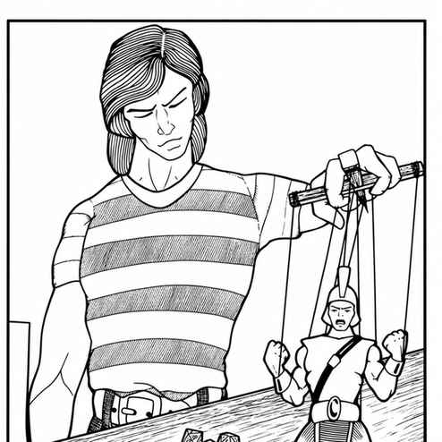

编者导言 · Editor’s Introduction
《神祇与半神》表面上像《怪物图鉴》：有图片，也有成组的统计数据；但它不是为玩家角色准备的敌人目录，而是给地下城主用来建立、加强和扩展战役的工具。没有神祇、没有影响凡人命运的强大存在，奇幻世界就不完整。
侍奉神祇也是 AD&D 的重要部分。所有玩家角色都应有自己的守护神；当阵营与信仰相连时，阵营行为会变得更加具体。牧师尤其需要这些材料：他们是社会中的仪式主持者和知识保管者，常与民众和地方领袖保持联系，也因此拥有比普通战士、隐居的魔法师或盗贼更大的社会影响力。
神祇过多可能让地下城主一时难以选择。应先考虑战役气质：中世纪、古代、东方，还是完全不同的世界？可只使用一个万神殿，也可让不同神系在不同地区并存。本书的一切都是给主持人的指南，不是必须遵守的规则；使用前请先阅读所选神话的背景。

上一节：编者导言与说明 · Editor’s Introduction and Explanatory Notes
下一节：说明 · Explanatory Notes